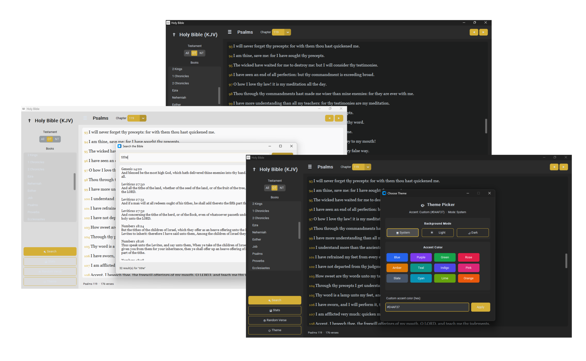

Valour Studios Presents
"Thy word is a lamp unto my feet, and a light unto my path."
Psalm 119 : 105
A beautifully crafted King James Bible for Windows. Free, offline, and always at your fingertips.
What's Inside
All 66 books of the King James Version, from Genesis to Revelation, fully intact and beautifully formatted.
Search any word, phrase, or verse reference across all of scripture instantly with fast full-text search.
Adjustable font sizes and themes designed for long reading sessions without eye strain.
No internet required. The entire Bible is stored locally — read anytime, anywhere, without a connection.
Runs smoothly on both modern and older Windows machines, including 32-bit systems.
The Experience
Holy Bible KJV brings the timeless words of scripture to your desktop in a clean, distraction-free environment. No ads, no subscriptions, no noise.
Whether you're doing a daily devotional, a deep word study, or following along with a sermon — the app stays out of your way and lets the Word speak.

Free Download
Choose the version that matches your system. Not sure? The Universal installer auto-detects your Windows architecture.
Free forever · No account required · No ads · Open source
Release History
Building software with purpose
Valour Studios is an independent software studio dedicated to building meaningful, high-quality applications. Holy Bible KJV was created out of a desire to make the scriptures more accessible — beautifully presented, completely free, and always available offline.
We believe great software should serve people, not profit from them. That's why Holy Bible KJV is free forever, contains no ads, and requires no account or subscription.
Questions or feedback? hello@valourstudios.com